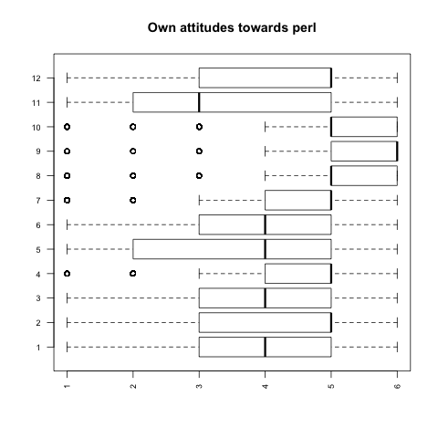
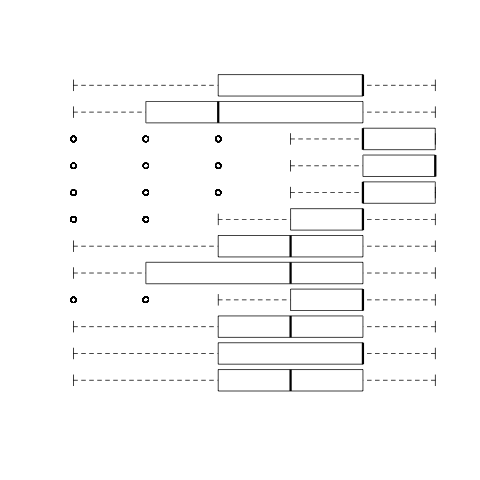
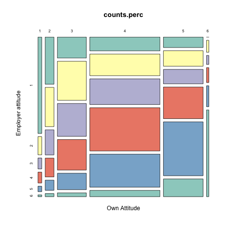

Own attitudes towards Perl

Legend
- Perl is a cutting edge language
- Perl is a good_language for a startup
- Perl is easy to maintain
- Perl scales well
- Perl is a good first programming language
- Perl is a good tool for beginners
- Perl is a good tool for early career programmers
- Perl is a good tool for experienced programmers
- Perl is a good tool for system administrators
- Perl is a good tool for network engineers
- Perl is a good tool for embedded systems programmers
- Perl is a good tool for applications programmers
Employer attitudes towards Perl

- Perl is encouraged at my workplace
- My employer encourages perl for new projects
- My employer viewes perl as a cutting edge language
- My employer views perl as easy to maintain
- My employer thinks that perl scales well
My versus employer attitudes to Perl

Generated on: Tue Aug 31 21:50:56 2010 - R2HTML